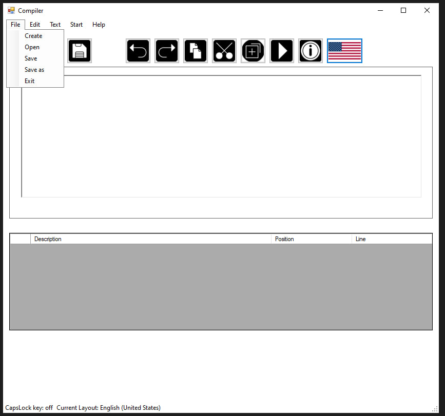
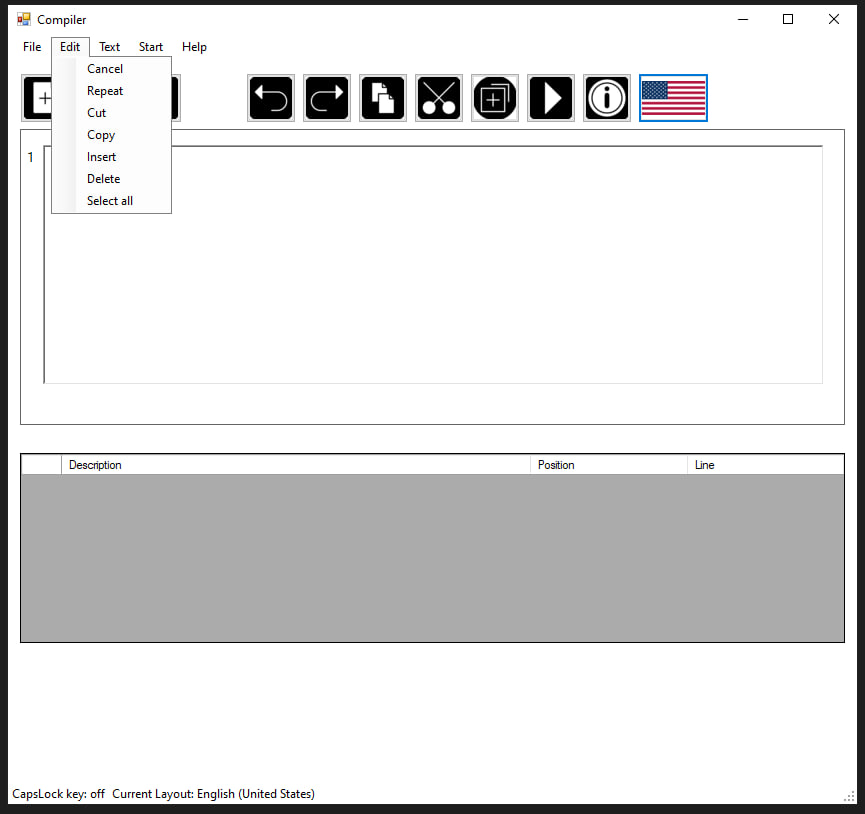
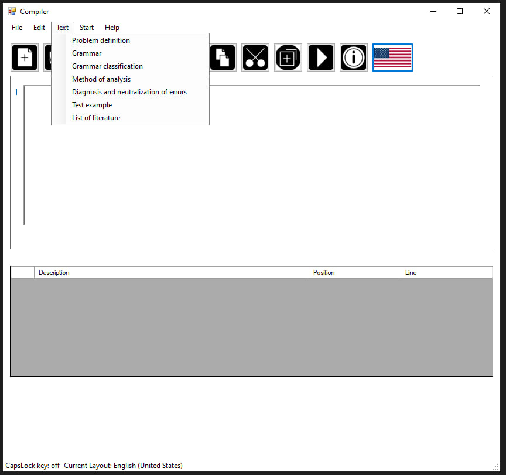
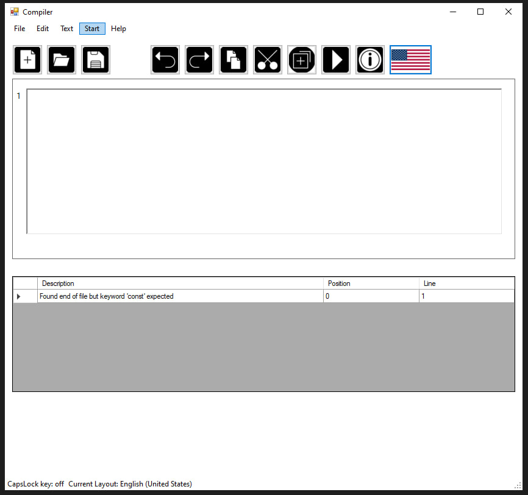
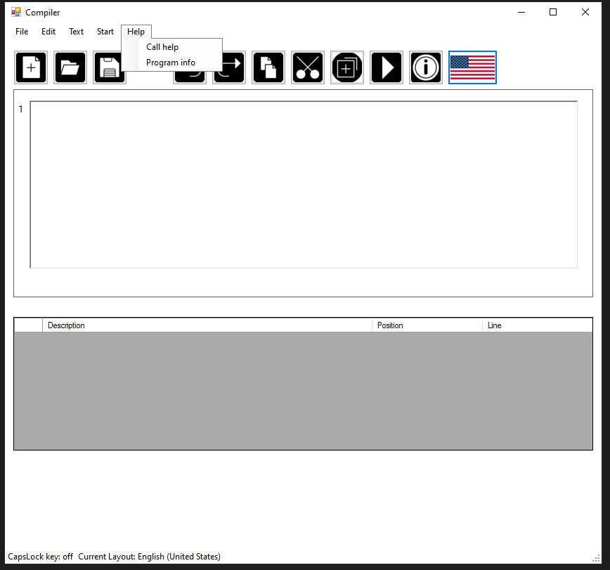

The "File" menu of the text editor has the following functionality (see Picture A.1):
Create Document
Open Document
Save Current Changes in Document
Save Document as New File
Exit the Text Editor

Picture A.1 – "File" Menu
"Edit" Menu of the Text Editor
The "Edit" menu of the text editor contains functionality for editing the entered text (see Picture A.2):
Undo Changes
Redo Last Change
Cut Selected Text Fragment
Copy Selected Text Fragment
Paste Text Fragment
Delete Selected Text Fragment
Select All Document Content

Picture A.2 – "Edit" Menu
"Text" Menu of the Text Editor
The "Text" menu contains commands for displaying information about the coursework and the program (see Picture A.3):
Task Statement
Grammar
Grammar Classification
Analysis Method
Error Diagnosis and Neutralization
Test Example
Literature List

Picture A.3 – "Text" Menu
"Start" Menu of the Text Editor
Clicking the "Start" menu item launches the parser (see Picture A.4).

Picture A.4 – "Start" Menu
"Help" Menu of the Text Editor
The "Help" menu contains a sub-item "Call Help" - a help description of the program, and a sub-item "Program info" - version and information about the developer (see Picture A.5).

Picture A.5 – "Help" Menu
Toolbar of the Text Editor
The toolbar contains buttons for frequently used menu items:
Create Document
Open Document
Save Current Changes in Document
Undo Changes
Redo Last Change
Copy Selected Text Fragment
Cut Selected Text Fragment
Paste Text Fragment
Launch Parser
Help
Change Language
Program Information
The program can work with text files of type txt. For this, the user has functions to work with files:
Create New File;
Open Existing File;
Save File;
Save As New File;
Exit - end the program.
For text processing, the following functions are implemented for the user:
Undo Previous Change;
Redo Change;
Cut Selected Text to Clipboard;
Copy Selected Text to Clipboard;
Paste Text from Clipboard;
Delete Selected Text;
Select All Text from the File Editing Area.
Messages and results of the language processor's work are displayed in the output area. The "Start" menu button launches the parser, which analyzes the entered text and outputs all detected errors.